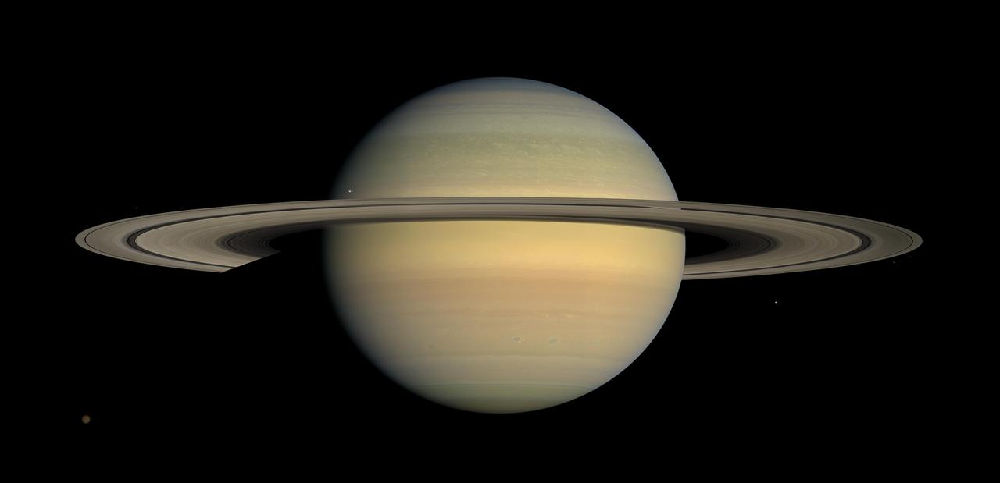
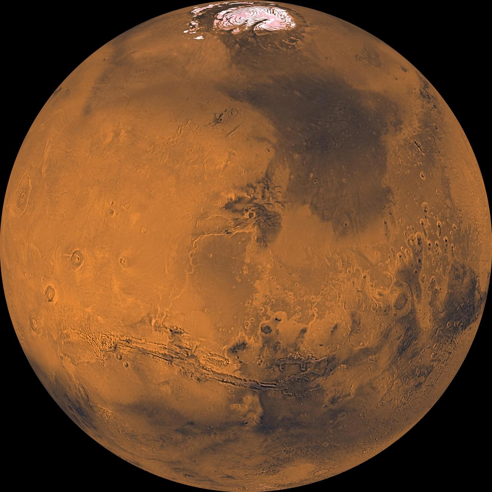
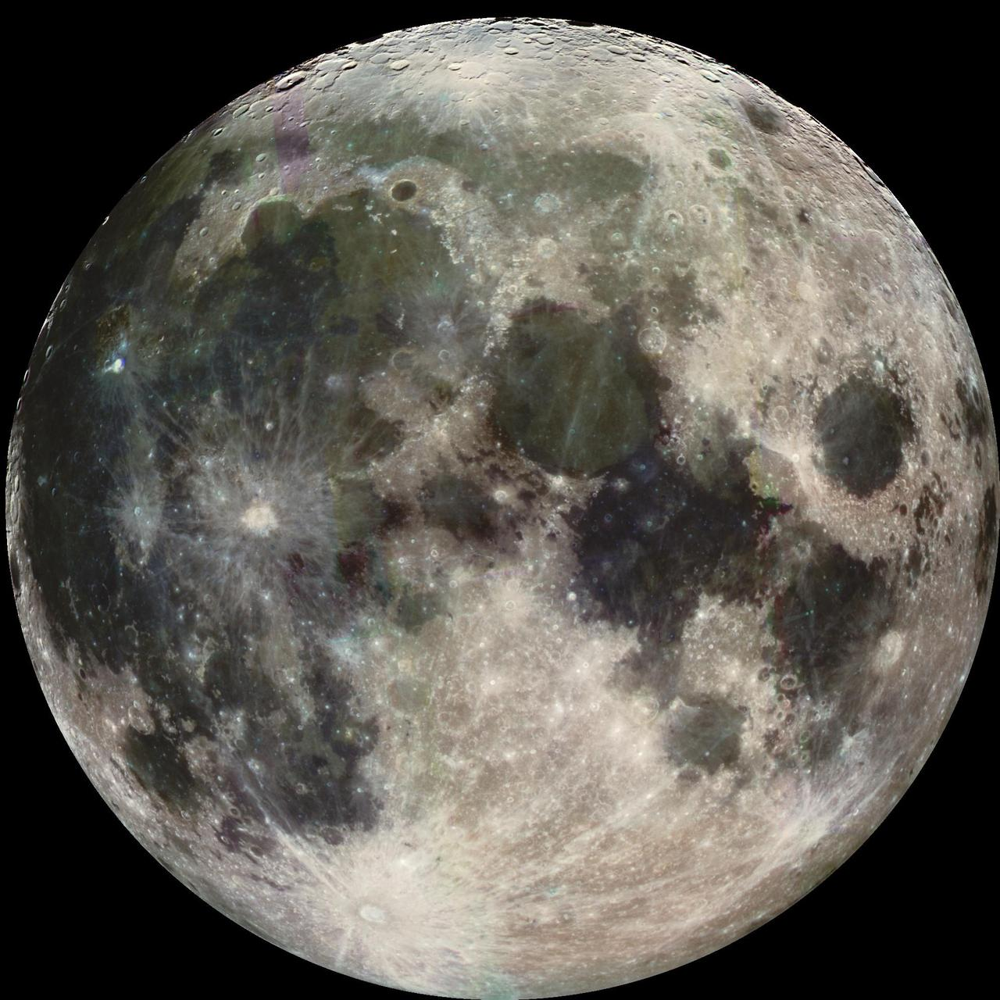
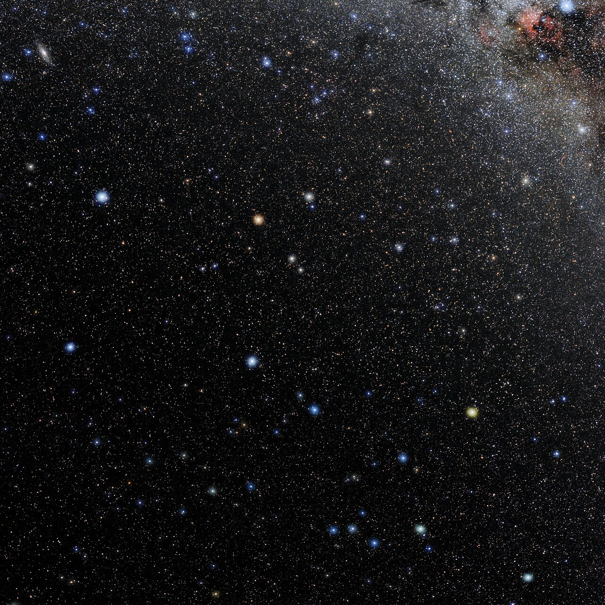

Saturno
Al telescopio si possono riconoscere gli anelli; a occhio nudo appare come un punto luminoso stabile. Il 15 del mese alle 22:00 si trova verso sud-est.
Fotografia di archivio. NASA/JPL/Space Science Institute
Ottobre riporta il buio dentro la sera: il Sole tramonta sempre prima e non occorre più aspettare fino a notte fonda per mettersi a osservare. Le costellazioni estive scivolano verso ovest; Pegaso e Andromeda prendono il loro posto, mentre a est si affacciano le stelle che ci accompagneranno verso l’inverno.Dopo il passaggio di una perturbazione, alcune serate possono offrire un’aria limpida e stelle ben definite. È il momento di approfittarne, ma senza dare per scontato un cielo sempre asciutto: nebbia, foschia e rugiada possono comparire, soprattutto nelle valli e in pianura. Prima di uscire, controlla le condizioni del luogo scelto.Vestiti a strati, porta una giacca calda e indossa scarpe adatte al terreno: restando fermi al binocolo il fresco si sente più che durante una passeggiata. Una sedia e una piccola torcia rossa rendono l’uscita più comoda. Spegni le luci vicine, lascia agli occhi il tempo di abituarsi al buio e comincia dalle figure più riconoscibili: il cielo di ottobre si scopre senza fretta.Prima di uscire controlla il rischio di gelate, soprattutto in quota e nelle località più fredde: scegli un terreno sicuro e proteggi mani e piedi. Dedica un riguardo anche agli strumenti: rugiada e condensa possono velare le lenti, mentre il freddo riduce l’autonomia delle batterie. Non strofinare le superfici ottiche per togliere ghiaccio o umidità; al rientro lascia asciugare gli strumenti prima di chiuderli nelle custodie.A guidare questa esplorazione c’è Pegaso. Il Grande Quadrato è un riferimento ampio e riconoscibile del cielo autunnale. Tra le mete consigliate trovi Galassia di Andromeda (M31): Una galassia vicina alla Via Lattea: sotto un cielo buio appare come una piccola nube allungata. Ammasso di Pegaso (M15): Vicino a Pegaso, appare come una piccola nube rotonda con un centro luminoso. Le schede dei protagonisti accompagnano il percorso con Saturno e Marte, indicando il momento più adatto per cercarli dalla città scelta.
La carta mostra il cielo del 15 del mese alle 22:00, ora italiana. Scegli una città: mappa e indicazioni di visibilità si aggiornano insieme.
Roma · 41.90° N, 12.50° E · Ottobre 2026. Mappa e schede aggiornate insieme.
Roma · 15 ottobre 2026 · ore 22:00 (ora legale). Per gli oggetti del cielo profondo scegli un luogo lontano dalle luci cittadine. Carta vista guardando verso l’alto: est a sinistra, ovest a destra; il centro è lo zenit. Punti dorati: pianeti; anelli azzurri: oggetti consigliati. Reticolo equatoriale J2000: ascensione retta (AR) in ore e declinazione (Dec) in gradi. La Luna è sotto l’orizzonte.
Una selezione mensile degli oggetti, dei fenomeni o delle configurazioni celesti che meritano particolare attenzione.

Al telescopio si possono riconoscere gli anelli; a occhio nudo appare come un punto luminoso stabile. Il 15 del mese alle 22:00 si trova verso sud-est.
Fotografia di archivio. NASA/JPL/Space Science Institute

Si riconosce per il colore rossastro. I dettagli della superficie richiedono un telescopio e condizioni favorevoli. Intorno al 25 del mese, cercalo verso sud-est alle 05:00, nelle ore dopo mezzanotte. Alle 22:00 del giorno 15 è sotto l’orizzonte.
Fotografia di archivio. NASA/JPL-Caltech/USGS

5 ottobre alle ore 08:01. I due astri appaiono vicini nel cielo. Cercali il 5 alle 05:00 verso est; la distanza apparente a quell’ora sarà diversa.
Fotografie separate dei due astri. Luna: NASA/JPL
Marte: NASA/JPL-Caltech/USGS

Il Grande Quadrato è un riferimento ampio e riconoscibile del cielo autunnale. Il 15 alle 22:00 si trova verso sud.
Fotografia di archivio. E. Slawik/NOIRLab/NSF/AURA/M. Zamani · CC BY 4.0
Dati di posizione ed eventi: Astronomy Engine. Stelle e tracciati: d3-celestial. Schede divulgative: catalogo Messier NASA/Hubble. Sciami di ottobre 2026: calendario IMO 2026. Fotografie dei protagonisti: archivi NASA, NOIRLab e autori indicati nelle schede.